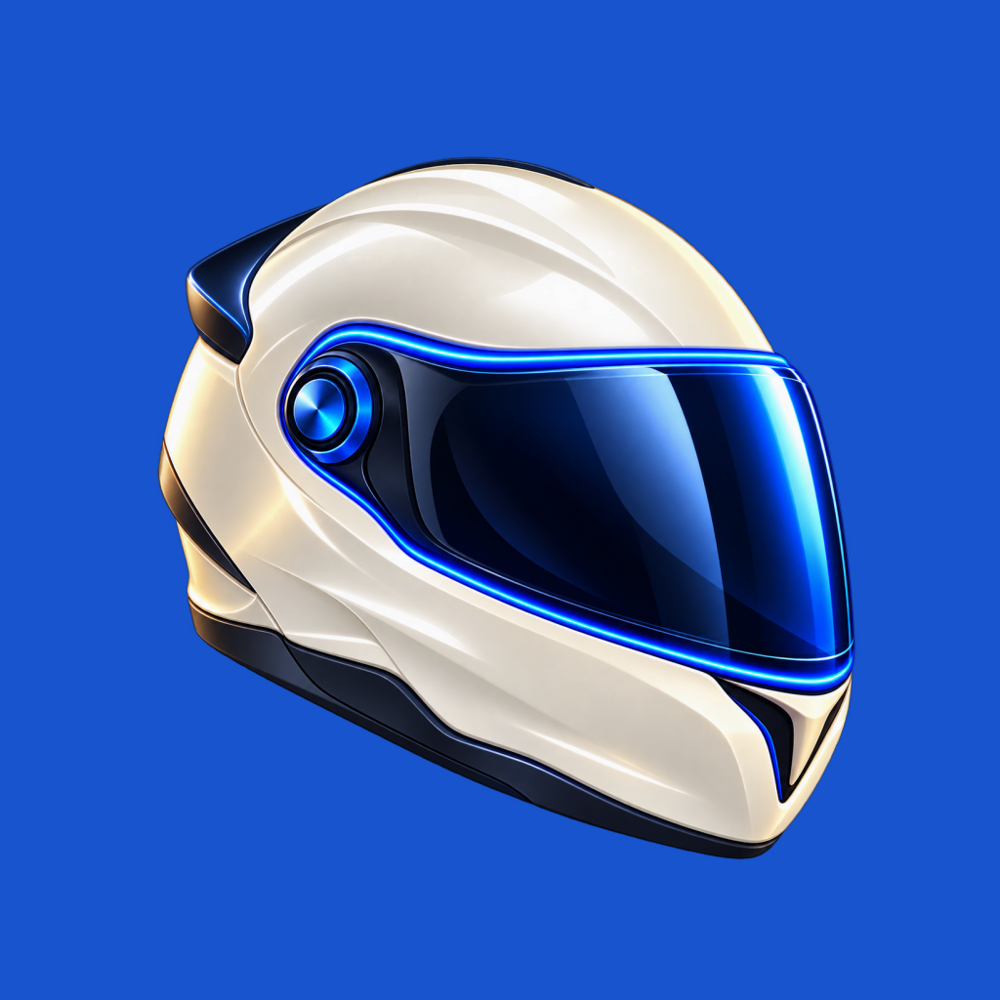
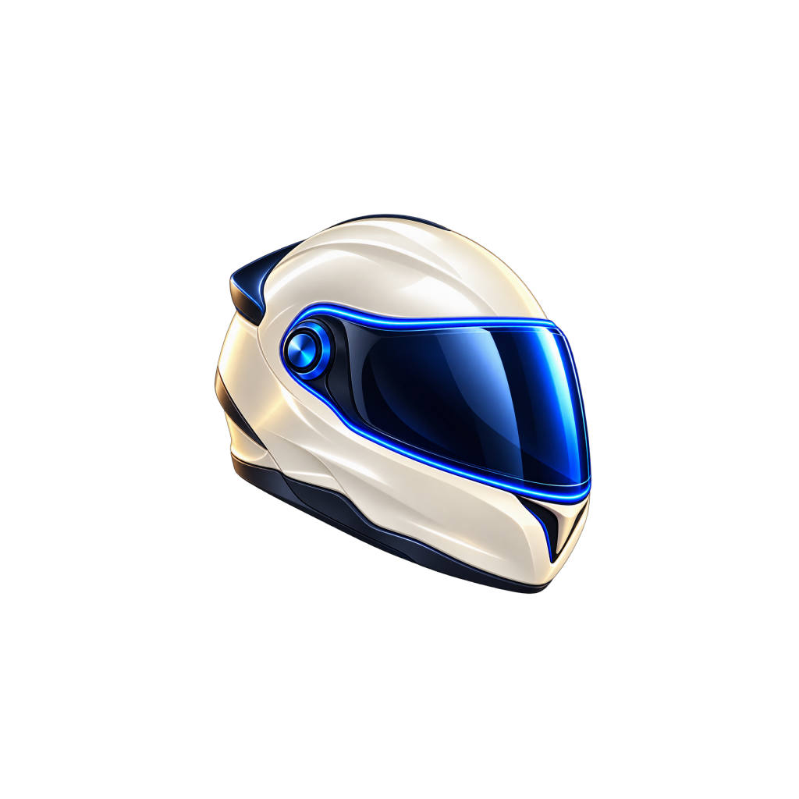

Seu próximo movimento.
O capacete aprovado, redesenhado para reconhecer o app num olhar.
Na tela do celular


Uma arte-mestra. Fundos e margens preparados para cada plataforma; as versões por resolução são geradas pelo Expo.
Prévia da abertura. O sistema operacional controla sua apresentação e duração.
Arte original e processo: ICONE.md. Esta página apresenta somente o ícone e a abertura; as telas aprovadas continuam no protótipo principal.